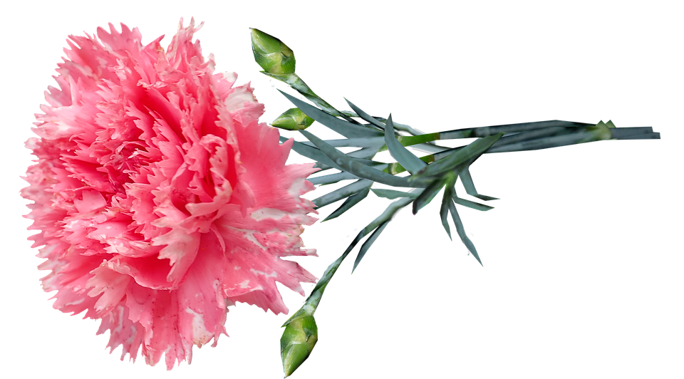

Listas
Listas Ordenadas/Utiles
- Lapiz
- Marcador
- Borrador
Listas Desordenadas/Clases
- Programación
- Lectura
- Mercadotecnia
Listas de Definiciones/Flores
- Girasoles
- Son plantas herbáceas de la familia de las asteráceas, originarias de América del Norte.
- Tulipanes
- Son plantas bulbosas muy utilizadas para la decoración de jardines y otros espacios, gracias a su increíble diversidad y su capacidad para la supervivencia que asegura su florecimiento.
- Clavel
- El clavel está considerada una de las plantas más hermosas del mundo.
